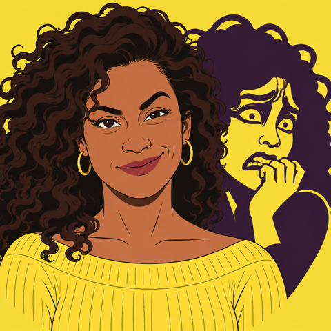
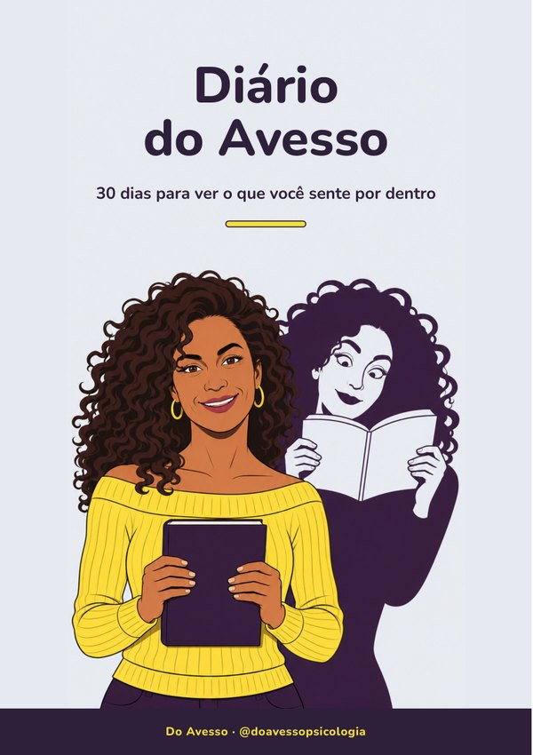

Do Avesso indica
Psicologia do cotidiano, sem enrolação.
Diário do Avesso

lançamento
30 dias para ver o que você sente por dentro.
Um diário guiado em PDF, para imprimir ou preencher no celular, com uma pergunta por dia e a tabela "o que eu mostrei / o que eu senti de verdade". De 2 a 5 minutos por dia.
Conhecer o diário Amostra grátis
Ferramenta de autoconhecimento. Não substitui psicoterapia.
Livros para ir mais fundo
A voz na sua cabeçaEthan KrossPara a mente que não desliga: vergonha, ruminação e o diálogo interno.Ver na Amazon →
AutocompaixãoKristin NeffPara quem é duro demais consigo depois de um mico ou de um erro.Ver na Amazon →
Comunicação não violentaMarshall RosenbergPara dizer a raiva pequena antes que ela vire explosão.Ver na Amazon →
BurnoutEmily e Amelia Nagoski (Kindle)Para entender o cansaço e o ciclo do estresse.Ver na Amazon →
Como as emoções são feitasLisa Feldman BarrettPara entender por que o corpo reage antes de a gente entender.Ver na Amazon →
A coragem de não agradarIchiro Kishimi e Fumitake KogaPra quem diz sim querendo dizer não.Ver na Amazon →
Minimalismo digitalCal NewportPra quem pega o celular toda vez que sobra um minuto.Ver na Amazon →
Agilidade emocionalSusan DavidPra quem responde "tô bem" no automático e guarda o resto.Ver na Amazon →
A coragem de ser imperfeitoBrené BrownPra quem acha que mostrar o que sente é fraqueza.Ver na Amazon →
Como associado da Amazon, eu recebo por compras qualificadas. | Links de afiliado.